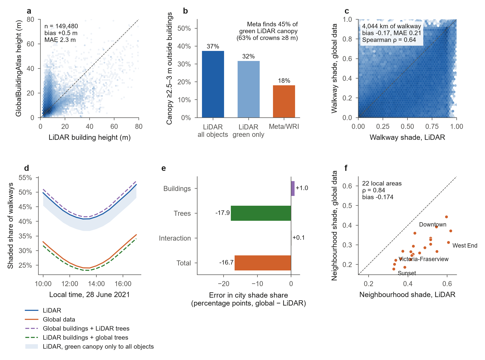
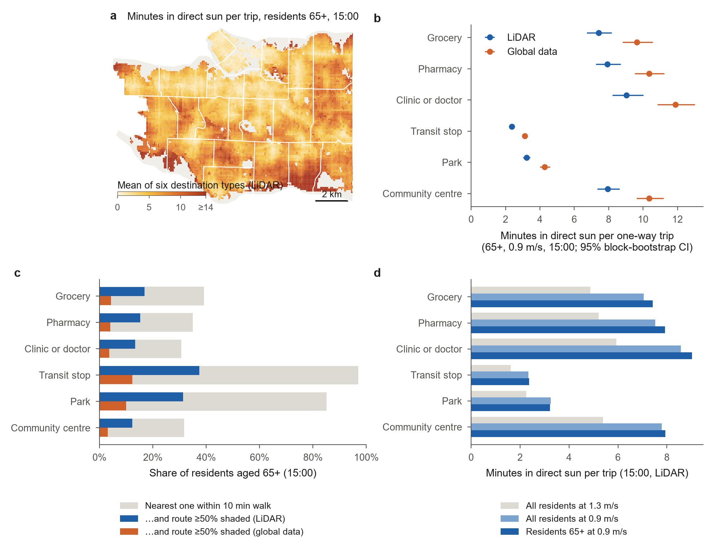
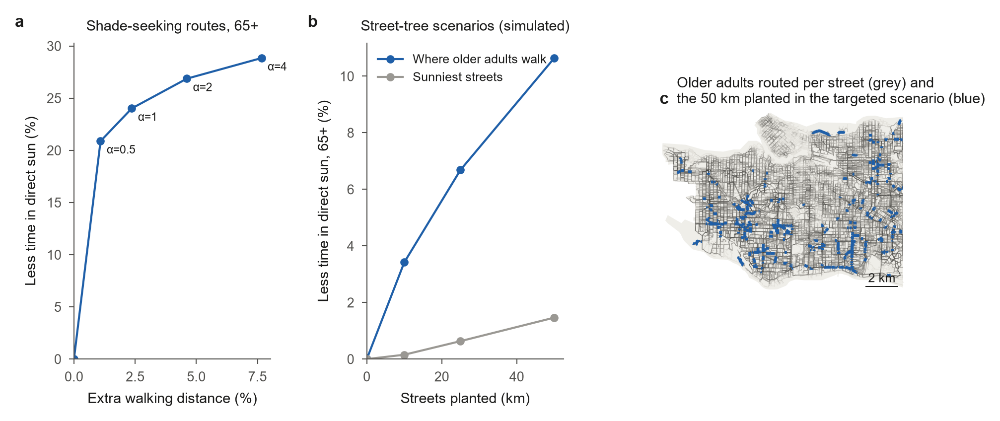

Methods in brief
Shade was cast from buildings and trees every 30 minutes from 10:00 to 17:00 on a 1 m grid by ray marching towards the sun, with 10% of direct sun passing through tree crowns. Two obstacle models share the LiDAR terrain: (1) the 2016 NRCan HRDEM LiDAR surface split into buildings and trees with building footprints, and (2) GlobalBuildingAtlas building heights with the Meta/WRI 1 m canopy height map. Shade was sampled every 2 m on both sidewalks of every street in the OpenStreetMap walk network. Residents (WorldPop 2025, 100 m) were routed to the nearest destination of each type on the shortest path; older adults walk at 0.9 m/s.
Shade is not thermal comfort: the model counts only blocked direct sun, not air temperature, humidity or radiation from hot surfaces. The street-tree results are simulations, not predictions.